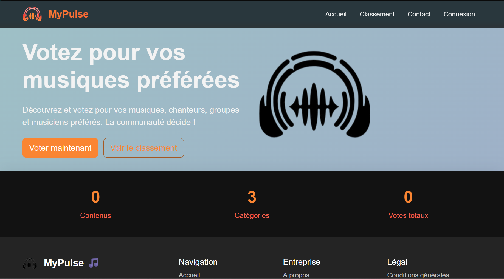
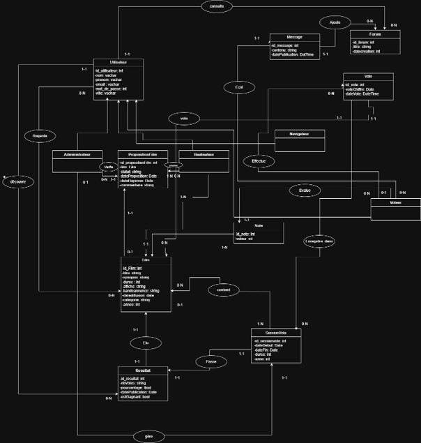
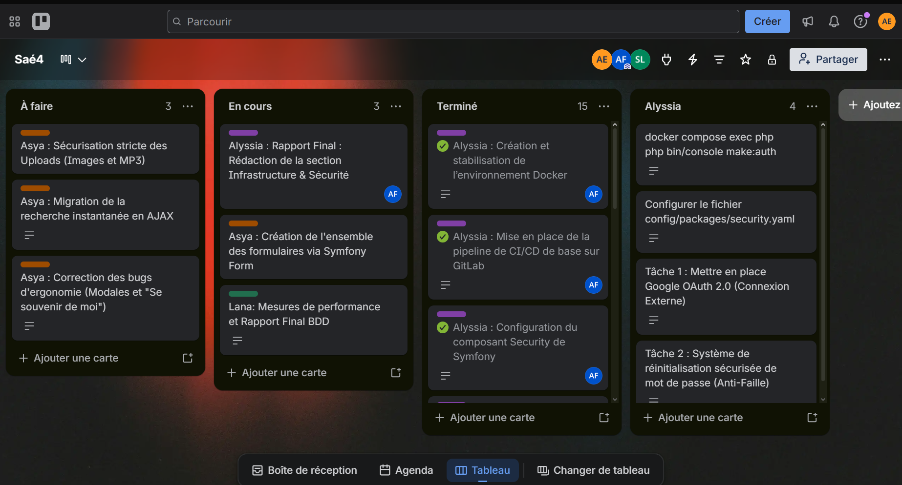
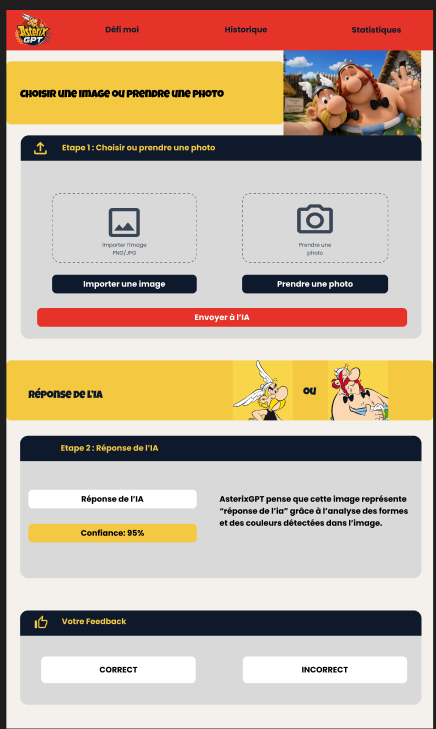

StarCiné
Une plateforme communautaire où les passionnés de cinéma votent et classent leurs films préférés. Le projet met l’accent sur la participation et la transparence des votes.
PORTFOLIO · INFORMATIQUE
Étudiante en BUT Informatique, je conçois des applications, explore les systèmes et m’intéresse particulièrement à la sécurité informatique.
UNE SÉLECTION DE MON TRAVAIL
Des applications web aux environnements systèmes, un aperçu concret de ce que j’aime construire.
Voir tous mes dépôts GitHub ↗
Une plateforme communautaire où les passionnés de cinéma votent et classent leurs films préférés. Le projet met l’accent sur la participation et la transparence des votes.

Un jeu avec interface graphique où le joueur pilote une voiture. Le développement couvre les déplacements, les collisions et le score.

Une chaîne de traitement d’image pour détecter une trajectoire : calibration caméra, correction optique, transformation de perspective et ajustement robuste avec RANSAC.

Analyse d’une application web existante, repérage de vulnérabilités et corrections pour renforcer la protection des données et la robustesse du service.

Création de machines virtuelles Linux et configuration de réseaux pour expérimenter l’administration système et la communication entre machines.
Configuration d’un serveur Apache local sous Linux, déploiement d’un certificat SSL et mise en place de connexions HTTPS.

Application Java de gestion des vols avec interface graphique, opérations de recherche et de mise à jour, et accès administrateur connecté à une base relationnelle.
Conception d’un modèle Entité-Association puis de son schéma relationnel pour une application de gestion, avec définition des entités et de leurs relations.

Projet mené en binôme autour d’un site web de vote : définition des fonctionnalités, répartition du travail et suivi des tâches jusqu’à la livraison.
Étude des acteurs, activités et flux d’information d’une organisation, puis formalisation des besoins et planification avec des méthodes agiles.

Présentation d’une application fictive à un public non spécialiste, avec un support visuel et des exemples pour rendre le sujet accessible.
Soutenances en équipe pour présenter des projets informatiques, expliquer les choix techniques et partager les résultats. Présentations également réalisées en anglais.

Application web permettant d’importer une image ou de prendre une photo, puis d’interroger une API pour reconnaître Astérix ou Obélix. L’interface propose aussi un historique et des statistiques.
Voir le code sur GitHub ↗Application de bureau pour gérer les inscriptions à un tournoi : création d’équipes, saisie des joueurs et contrôle des inscriptions et des places disponibles.
Voir le code sur GitHub ↗À PROPOS
Actuellement en BUT Informatique à l’IUT de Saint-Dié-des-Vosges, je m’intéresse au développement logiciel, aux systèmes et à la cybersécurité. J’aime comprendre comment les outils fonctionnent et transformer un besoin en solution concrète.
ÉCHANGEONS
Pour une opportunité, une question ou échanger autour d’un projet, vous pouvez me joindre ici.